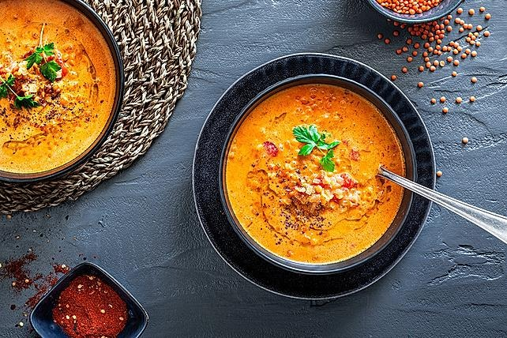

Rote Linsen-Kokos-Suppe
Zutaten für
| 1 Dose Pizzatomaten |
| 1 Dose Kokosmilch |
| 1 Zwiebel(n) |
| 175 g Linsen, Rote |
| 3 TL Chilipulver |
| 2 El Kurkuma |
| 600 ml Gemüsebrühe |
| Sonnenblumenöl |
| Salz |
Nährwerte pro Portion : kcal 296 | Eiweiß 18,80 g | Fett 2,8 g | Kohlenhydr. 44,0 g
Zubereitung
Die Zwiebeln schälen und in feine Würfel schneiden. Im Sonnenblumenöl glasig anschwitzen. Rote Linsen, Tomaten mit Saft und Kokosmilch hinzufügen und gut umrühren. Mit der Gemüsebrühe aufgießen und die Suppe ca. 20 Minuten köcheln. Zum Schluss mit Salz, Chili- und Kurkumapulver abschmecken. Die Suppe schmeckt am nächsten Tag doppelt so gut. Dazu passen Garnelenspieße und Baguette.
Rezept erstellt von
 Fatih
Fatih